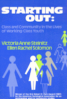

|  |
Starting OutClass and Community in the Lives of Working-Class YouthVictoria Anne Steinitz and Ellen Rachel Solomonpaper EAN: 978-0-87722-620-8 (ISBN: 0-87722-620-2) |
Robert E. Park Award, American Sociological Association, 1987
"Based on interviews with working-class white youths in three communities near Boston, this book "gives us two snapshots of three groups of youths who find themselves in the crisis of the early seventies."
—Contemporary Sociology
Excerpt available at www.temple.edu/tempress
"For today�s teachers of working-class youth, who may still believe it�s necessary to convince their students that �to move up, one must move out,' Steinitz and Solomon have some advice."
—The Boston Sunday Globe
"A vivid examination of working-class youth�s coming of age within the confines of the mythology and reality of the American Dream."
—Harvard Educational Review
"Steinitz and Solomon have plunged into the worlds of working class youth and emerged with a sensitive report on these youths� agendas, ambitions, and melancholia-matters normally hidden from the academic bourgeoisie. We are offered a poignant portrait of a crowd whose members have, we discover, thoroughly distinctive faces."
—Robert E. Lane, Professor Emeritus, Yale University
"This fine qualitative study is a highly readable and thoughtful examination of working-class life that belongs on the bookshelves of psychologists concerned with identity or adolescence."
—Contemporary Psychology
"This book brings the missing voices of working class students into the debates on education. Students in my classes read it and feel the shock of recognition and understanding...a wonderful book."
—Joseph Featherstone, Michigan State University
Preface
1. Adolescence, the American Dream, and the Developmental Vision
2. Cityville: Becoming Somebody and Staying Oneself
3. Townline: Struggling to Set One's Own Course
4. Milltown: Becoming a Responsible Achiever
5. The Evolution of Social Identity
6. Confronting the Worlds Beyond Community
7. Developmental Dilemmas and the Social Identities of Working-Class Youth
Notes
References
Index
Victoria Anne Steinitz is Associate Professor, College of Public and Community Service at the University of Massachusetts, Boston.
Ellen Rachel Solomon is Faculty Associate, Institute for Writing and Thinking at Bard College.
Psychology
Education
Sociology
© 2015 Temple University. All Rights Reserved. This page: http://www.temple.edu/tempress/titles/390_reg.html.